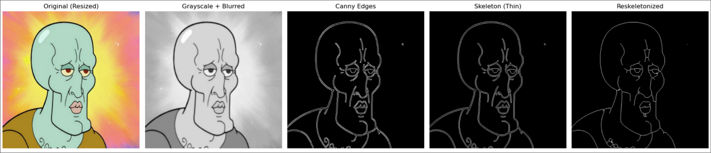

The slicer’s objective is to take a target image and transform it into a set of waypoints that can be targeted by the physical printer, while optimizing for the best way to route the marker in one line over the processed image. The slicer aims to minimize the amount the marker draws in total, and especially the amount of space the marker draws on the paper that is not in the processed image.
For the following operations, our program makes use of the OpenCV, Numpy, Scikit, and Scipy
libraries.

To ensure that the printer is able to effectively do a “one-line-drawing”, the goal of the image
processor is to minimize the amount of edges the printer needs to draw while still having a recognizable
output image.
1. Fit all images to a square shape of 480 by 480 pixels
We chose 480x480 experimentally, as it seemed to not lose too much resolution, but was still small
enough that we later on did not have to discretize and lose resolution in our output sliced coordinates
before inputting into our physical printer. We fit to a square to ensure that our printer (which is
approximately square shaped) can effectively print the entire image). Additionally, we transform the
image to grayscale to reduce the amount of feature noise.
2. Detect Edges
We first use a Gaussian filter to blur the image. Adding blur reduces the amount of feature noise
further. We then use the Canny Edge Detector to detect edges. Internally, the Canny Edge Detector
smooths the image, finds the image gradient in the x and y directions using the Sobel operator, and then
applies different thresholds and suppressions to find the most edges in the image that are most likely
to be important.
We initially experimented with using our own Sobel operations to find edges and keeping only the edges with the gradient magnitude above some threshold, but discovered that while Canny had more feature-filled output for some images, it was more consistent than our approach, so we decided to use the Canny Edge Detector.
3. Skeletonize
As you can see in the example of Handsome Squidward above, Canny often finds “double edges” for all
major borders, even when the borders are very tiny. We find the Medial Axis of the Canny output to try
to get rid of some of these double borders (“Skeleton (Thin) above). However, there are often still
regions with many densely populated edges that we want to simplify. So, we dilate every point circularly
outward, causing some dense areas to merge, and then re-skeletonize. Skeletonization simplifies blobs
into one-pixel-wide lines, which will be very useful for our slicing graph algorithms.
This gives us the final output of the image processing step, giving us the actual simplified image we
wish to draw on paper. This is then passed into the path finder.
We can see in the final skeletonized image that there are some discrete clusters that we can divide the
image into. For example, Squidward’s head, mouth, and eyes are all discrete pieces. This means that we
need to individually find the best route to travel between these pieces, and also find the best way to
travel between them such that we minimize the amount of unnecessary white paper that we draw on (this
adds additional lines not in the target processed photo).
1. Cluster Finding
We use DBScan, a density-based clustering algorithm, to find these major groups. For each group, we
reduce the group to a graph (network) data structure by creating a node for every pixel in each group,
and attaching nodes to each other if they are within a one pixel distance.
2. Subgraph Construction
Because our skeletonized image has a maximum width of 1 pixel for each edge, we know that every pixel on
an edge in our photo has 1 (dead-end) or 2 neighbors, unless that pixel lies at the intersection of
multiple edges. We create a subgraph from our original graph, where we consider these intersection
points and dead-ends to be nodes, and all other points to be on edges connecting them. Additionally, we
again merge very close points in this step into single nodes.
3. Optimal Traversal
Now we need to find the optimal traversal of these subgraphs so that all edges are covered with minimal
distance traveled. To do so, we do the following process:
Convert each subgraph into a weighted graph, where each edge has weight based on the number of pixels in
the edge.
Make a node order by doing Depth First Search (DFS) from the most top-left node, adding intermediate
nodes inside of edges. The DFS priority is based on traveling to subtrees with minimal cost (this means
that we will visit small branches, like whiskers on a cat or fingers on a hand, before large branches
like arms), minimizing backtracking distance. For example, suppose we started at the top of squidward’s
head and went to his shoulders before covering his connected eye. Then, we would need to do a large
backtrace from the shoulders back to the eyes later, whereas covering his eye first minimizes the amount
backtraced to get to his shoulders after.
Construct a path by traveling from node to node through the DFS order, skipping edges whose intermediate
nodes have been traversed, and finding the shortest path from the current node to the next node through
our subgraph using Dijstra’s algorithm. This has the effect of allowing the path to visit different
edges if it is more efficient than backtracing.
Once an optimal traversal of each subgraph has been found, we find the best way to travel between them.
Find the shortest distance between each pair of subgraphs (smallest distance between any two points).
Do Prim’s algorithm to construct a Minimum Spanning Tree (MST, a tree connecting all subgraphs which
minimizes the overall distance between each subgraph).
Do DFS on the MST to find an order through which to visit the subgraphs.
At each step in the path, follow the optimal traversal of the current subgraph, and then travel to the
point on the subgraph closest to the next subgraph, and jump over to that subgraph with an extra line.
We made a simulation using Pygame which shows the result of this process:
Steps for Improvement
After creating this process, we discovered that our problem is very similar to the solved Chinese
Postman Problem, where the goal is to visit all edges in a graph (repetition allowed) with minimal
distance. We could transform our problem into an instance of this problem by combining the subgraphs
together using the MST into one big graph, that we would then use the solution algorithm for the Chinese
Postman Problem on.
The final path is handed off to the Serial Communicator.